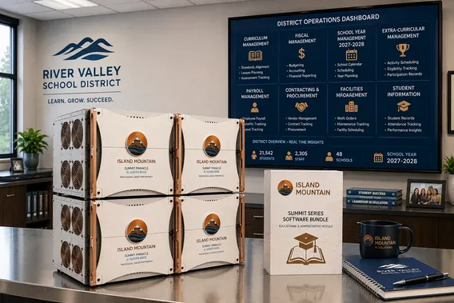

FERPA protects student education records. The "school official" exception works best when the AI processing those records is under direct institutional control - not a cloud vendor's terms of service. On-premises AI for schools and universities keeps student data on campus hardware.
Built by John Dougherty, 25-year enterprise security and technology veteran. Every system is personally assembled, burn-tested for 72 hours, and delivered direct.
Air-gapped AI education infrastructure keeps student records on campus. FERPA requires institutional control over student education records - cloud AI transmits those records to commercial infrastructure.
FERPA (20 U.S.C. § 1232g) establishes that educational institutions receiving federal funding must protect the privacy of student education records. The "school official" exception permits disclosure of education records to school officials with legitimate educational interests - but the exception was designed for employees and contractors under direct institutional control. Cloud AI vendors operate commercial infrastructure under their own terms of service, privacy policies, and data handling practices. Educational institutions are one of eleven regulated industries where this structural conflict between cloud AI and data privacy requirements is most acute.
For K-12 institutions, COPPA (Children's Online Privacy Protection Act) adds requirements for children under 13. State student privacy laws - California's SOPIPA (Student Online Personal Information Protection Act), New York Education Law 2-d, Illinois SOPPA, and similar statutes in over 40 states - impose additional restrictions on how student data can be collected, used, and disclosed to third parties. Cloud AI processing triggers many of these disclosure provisions.
Universities face additional complexity: IRB requirements for student research data (requirements shared with dedicated research labs), Title IV data protection obligations, and institutional review of data sharing agreements for any technology processing student records. On-premise AI for edtech resolves the structural problem that is consistent across all levels of education: cloud AI vendors process student education records on commercial infrastructure, creating a data handling dependency that complicates FERPA compliance and exposes institutions to enforcement risk from the Department of Education. Public institutions face additional government data handling requirements as recipients of state and federal funding.
Air-gapped inference university IT departments can trust. "No data leaves your campus" is not marketing language - it is a description of campus-controlled network architecture.
Student data never leaves your campus network. Prompts travel from workstation to server over internal network only. No cloud vendor processes student records.
Physical server with NVIDIA H100 GPUs in your campus data center, on your network, under your IT department's control. Institutional ownership of AI infrastructure.
Air-gap GPU server college and university deployments with complete network isolation available after initial setup. For institutions with the most stringent data handling requirements, the system operates with zero external connections.

Summit Series scaled for district-wide deployment, with Educational and Administrative Software Bundle
The same AI capabilities you want from cloud services, running on hardware that doesn't create compliance exposure.
Local AI for curriculum design: analyze learning objectives, generate course outlines, develop assessment rubrics, and create supplementary materials. Support faculty in curriculum development without exposing proprietary course materials to cloud services.
Secure AI for student records: process enrollment records, academic transcripts, and advising notes to generate student summaries for advisors and administrators. Keep personally identifiable student information entirely on campus hardware.
On-prem AI for research: support faculty with AI-assisted data analysis, literature review synthesis, and methodology documentation. Keep unpublished findings and grant-funded research data on institutional hardware.
Draft accreditation reports, institutional effectiveness documentation, board presentations, and administrative correspondence. Run an on-prem LLM for admissions communications, enrollment management, and institutional reporting. Process sensitive institutional data locally.
Assist with grant narrative development, budget justification drafting, and proposal editing. Process preliminary research data and institutional information without cloud exposure.
Local AI for grading support: develop rubrics, draft feedback, and analyze assessment data. The AI assists with documentation and drafting - educators make all evaluation decisions.
NVIDIA H100 campus AI infrastructure running open-source models under institutional control. A local LLM for universities and K-12 districts with zero cloud dependency. Private AI for K-12 and higher education under institutional control.
Best for: Complex research analysis, multi-document literature review, accreditation documentation, long-context institutional reporting tasks. 284B parameters with mixture-of-experts architecture. Local DeepSeek for higher ed runs quantized on the Summit Base tier.
Best for: General drafting, correspondence, grant narratives, curriculum descriptions, administrative communications. Strong general-purpose model that produces clean, structured prose quickly.
Best for: Chain-of-thought academic reasoning (R1 Distill) or high-throughput institutional drafting (Qwen 3 72B). Buyer selects at order. Both run on the same VRAM budget.
The cloud transmits student records to commercial servers. The hardware keeps everything on campus.
| Cloud AI | Island Mountain Summit Base | |
|---|---|---|
| Year 1 Cost (30 users) | $7,200 - $36,000 (edu pricing) | $75,000 - $85,000 (one time, unlimited users) |
| Year 1 Cost (200 users) | $48,000 - $240,000 | $75,000 - $85,000 (same hardware) |
| Year 3 Cumulative (200 users) | $144,000 - $720,000 | Electricity only (~$1,200 - $2,400/yr) |
| Student Data Location | Commercial cloud servers | Your campus data center. |
| FERPA Compliance | Depends on vendor contract terms | Student data never leaves campus. |
| Per-Token Fees | $10 - $40 per million tokens (edu) | None. Unlimited use. |
| Model Control | Provider decides models and updates | You choose which models to run |
| LMS Integration | Some platforms offer integrations | Not included. General-purpose AI. |
| Vendor Lock-In | Complete | None. Permissive open-source licenses. |
Knowing the boundaries matters more than knowing the features.
The models are general-purpose large language models. They are not trained on educational datasets, pedagogical frameworks, or discipline-specific knowledge bases. They are strong at reasoning, analysis, and prose generation - but they are general tools, not purpose-built educational AI.
Island Mountain hardware does not connect to Canvas, Blackboard, Moodle, Banner, PowerSchool, Ellucian, or other educational technology platforms. The AI runs through OpenWebUI - a browser-based chat interface. Moving data between your educational systems and the AI is a manual process.
The system provides drafting assistance for feedback and rubric development, but it does not automatically grade student work or generate scores. Local AI for campus security documentation is possible through the chat interface, but the system has no direct integration with campus safety systems. AI assists with the prose around assessment - educators make all evaluation decisions and exercise professional judgment.
After the 30-day included support period, your institution is responsible for OS security updates, model updates, and general system maintenance. Most university IT departments can incorporate this into their standard server management workflow.
A FERPA compliant AI server keeps student education records under institutional control from day one.
FERPA's "school official" exception (34 CFR § 99.31(a)(1)) permits disclosure of education records to school officials with legitimate educational interests. For third-party contractors to qualify under this exception, they must perform an institutional service or function, be under direct control of the institution with respect to use and maintenance of education records, and use records only for authorized purposes. FERPA school official AI designations through cloud vendors may satisfy these contractual requirements - but the structural dependency on commercial infrastructure for student data processing creates ongoing compliance risk and audit complexity.
COPPA (15 U.S.C. §§ 6501-6506) requires verifiable parental consent before collecting personal information from children under 13. K-12 institutions using cloud AI for student data create disclosure scenarios that may trigger COPPA requirements beyond what the school consent exception covers. Local processing eliminates the third-party collection that triggers COPPA's disclosure provisions.
State student privacy laws add jurisdiction-specific requirements. California's SOPIPA prohibits operators of educational technology services from using student data for non-educational purposes. New York Education Law 2-d requires data privacy and security plans from third-party contractors. Illinois SOPPA mandates transparency in data collection by educational technology operators. Over 40 states have enacted similar legislation. The common thread: restrictions on third-party access to student data that cloud AI processing inherently involves. Education AI without cloud dependency resolves these restrictions architecturally.
For research universities, IRB requirements govern the handling of student research data. Campus health centers face HIPAA obligations identical to medical practices. Title IV data protection obligations apply to financial aid information. Institutional review of data sharing agreements adds administrative overhead for any technology processing student records. Local AI deployment simplifies this entire analysis: when student data never leaves campus infrastructure, the third-party disclosure and data sharing questions do not arise.
Disclaimer: This section describes the general regulatory environment regarding AI and student data protection. It is not legal or compliance advice. Consult your institution's general counsel, FERPA officer, or qualified education law attorney for guidance specific to your institution type, student population, and operational context.
Power & Installation: All Island Mountain systems require a dedicated 208V/30A power circuit (NEMA L6-30R). This is standard in server rooms and data closets. Most educational institutions with an existing server closet already have this infrastructure or can add it for $500-$2,000 through a licensed electrician. The system fits in a standard 4U rack space. Average power draw under typical inference loads is 1.5-2.5 kW.
Yes. Cloud AI processing of student education records constitutes disclosure to a third party under FERPA (20 U.S.C. section 1232g). Whether this satisfies the school official exception depends on contractual arrangements and direct institutional control requirements that cloud vendors may not meet. On-premises AI from Island Mountain eliminates this analysis entirely - student data never leaves campus infrastructure.
Island Mountain hardware supports curriculum design assistance, student record summarization and academic advising, research data analysis for faculty, administrative document drafting including accreditation reports, grant proposal development, and assessment assistance. The system runs DeepSeek V4-Flash for complex research analysis and Llama 4 Scout for general drafting.
Cloud AI at education pricing ($20 to $100 per user per month) for 200 campus users costs $48,000 to $240,000 annually with ongoing student data exposure. An Island Mountain Summit Base system costs $75,000 to $85,000 as a one-time purchase supporting unlimited users on the campus network. Cost parity within 12 to 24 months for most deployments.
No. The system ships pre-configured and ready to use through a web browser. 30 days of setup support included. Standard Linux server administration for ongoing maintenance. Most university IT departments incorporate it into existing server management workflows.
Island Mountain is a hardware company, not a compliance authority. References to FERPA, COPPA, state student privacy laws, or related educational data protection frameworks on this page reflect factual descriptions of data handling mechanics - not legal, regulatory, or compliance advice. Consult qualified counsel for compliance determinations specific to your organization and jurisdiction.
Community college serving 8,000 students. Student advising records, enrollment data, and institutional research all processed on our servers. FERPA compliance is straightforward when data never leaves campus.
Scenario: Community CollegeK-12 district with 12,000 students across 18 schools. Student records stay on district servers. Parents trust that their children's data isn't being processed by commercial AI companies.
Scenario: K-12 School DistrictResearch university with $50M in annual grant funding. Unpublished research data and student records processed locally. IRB requirements are simpler when no third-party data sharing is involved.
Scenario: Research UniversityOne conversation. No sales pitch. Tell us about your institution's AI needs and we will spec the right system.
Or call directly: 1-801-609-1130
See all eleven industries we serve or explore: Government · Research Labs